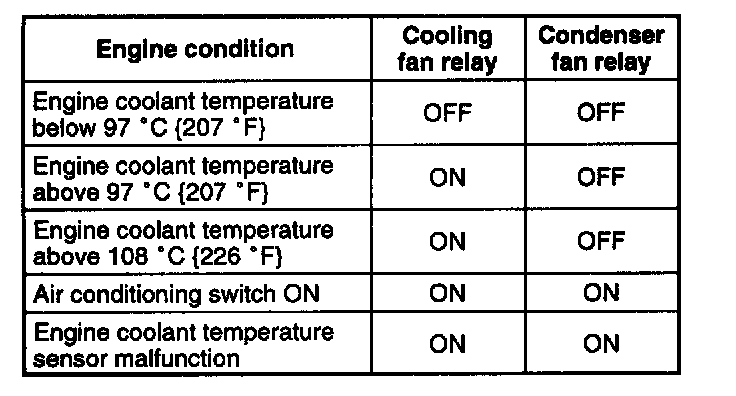

Radiator Cooling Fan Control Module: Testing and Inspection

Cooling fan operation
Cooling fan
1. Verity the engine is cold.
2. Turn the ignition switch to ON.
3. Verity the cooling fan is not operating.
4. If the cooling fan is operating:
1. Connect the NGS tester to DLC-2.
2. Select the "SIMULATION TEST". Then, select "FAN2" in "IG ON TEST".
3. Send verify "OFF" and the cooling fan is OFF.
3. If the cooling tan is ON inspect:
- Cooling fan relay stuck in closed position.
- Short to ground circuit between cooling fan relay and PCM terminal R.
- Short to power in circuit between cooling fan relay.
- DTCs for ECT sensor.
- P0117, P0118, P0125
5. If the cooling fan is OFF, inspect the following.
- Short to ground circuit between A/C switch and PCM terminal P.
- DTC for ECT sensor.
- P0117, P0118, P0125
5. Start the engine.
6. Verity that the cooling fan is operating when engine is hot.
7. If the cooling fan does not operate, do as follows.
1. Connect the SSTs (NGS tester) to the DLC-2.
2. Select "SIMULATION TEST" mode.
3. Select "IG ON TEST" mode.
3. Select "FAN2".
5. Press "Start".
6. If the cooling fan operates, inspect the ECT sensor DTCs.
- P0117, P0118, P0125
7. If the cooling fan does not operate, do as follows.
1. Select "FAN2". Operate cooling fan by selecting "Start", and verity that operation sound is heard from the cooling tan relay.
2. If the operation sound is heard, inspect the wiring harnesses and connectors and cooling fan motor.
3. If operational sound is heard, inspect cooling tan relay and open circuit in wiring harnesses and connectors.
8. Turn the A/C switch and fan switch on.
9. Verity the cooling fan is operating.
10. If fan does not operate, inspect A/C system.